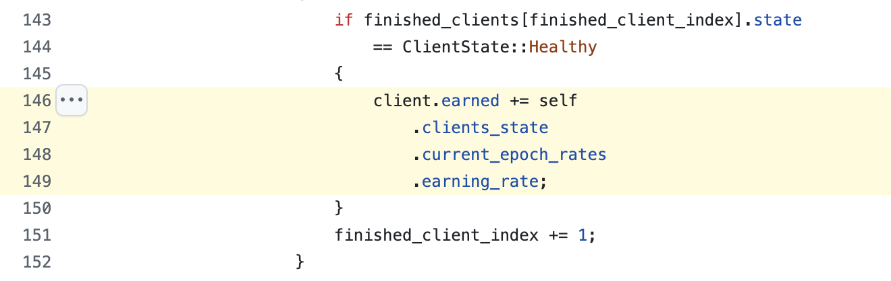
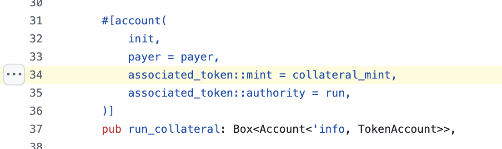

对 Psyche Network 项目的分析（AI）
项目背景
Psyche Network 是 AI + Web3 赛道的一个项目，由 Nous Research 团队研发，两个月前获得了 Paradigm 机构 5 千万美元的 A 轮融资。
Psyche Network 的项目背景在 官方说明文章 里有详细介绍。Nous Research 团队研发出了一种去中心化的算法 DeMo，这种算法能够把大语言模型（LLM）的训练，放到分布式网络里进行，不需要集群服务那种高耦合。就类似比特币挖矿的矿池一样，会把大的计算任务，拆解为小的计算任务，分发给不同的 Client 节点进行计算，计算之后再把结果汇总起来。
当然 LLM 的训练和矿池的挖矿，从算法原理上完全是两码事，这里只是想类比说明便于理解。具体 DeMo 是怎么从算法角度把任务拆解和合并的，可以看 官方的解释，反正我没看懂，就是一堆向量、权重、loss function 什么的术语。关于怎么防止节点提交虚假数据之类，我认为也都在算法的设计范畴，后续就不多讨论算法本身的有效性了。
DeMo 的 论文 里用了 100 billion 的 tokens 做训练测试，得到了比较好的结果。100 B tokens 是什么概念呢，比如 DeekSeek-V3 的 tokens 数量是 15 TB，可见 DeMo 在实验阶段的 tokens 数量级，距离商用产品还差很多。可以对比一些其他模型的 tokens 数量：
| 模型 | 参数量 | 预训练 tokens 数量 | 公开来源或泄露信息 |
|---|---|---|---|
| GPT-3 | 175 B | ≈ 499 B | 论文及后续综述 |
| GPT-3.5 | 175 B | 推测 ~1 T 左右 | — |
| GPT-4 | 1.7 T | ≈ 13 T tokens | SemiAnalysis / The Decoder 报告 |
| Llama 3 | 70 B | > 15 T tokens | Meta 官方模型卡 |
| DeMo OLMo | 1 B | 0.1 T tokens（100 B） | DeMo 论文 |
Psyche Network 基于 DeMo 的算法原理，结合区块链来构建分布式网络，第一阶段的目标是训练出 40 B parameters, 20 T tokens 的模型。关于 parameters 和 tokens 这两个指标，我的理解是，parameters 是训练一开始就定义好的固定指标，tokens 则是需要不断进行计算和训练的，而 DeMo 解决的是 tokens 的分布式计算。Psyche Network 官网上有实时显示当前的训练进度，目前已经达到了 1 TB 的 tokens 数量：

这个模型训练完，也许可以接近 GPT-3 的水平。对比来看虽然 tokens 数量比 GPT-3 多，但是 parameters 比 GPT-3 少，所以最终效果应该不如 GPT-3。
项目结构
Psyche Network 的 文档 里有介绍整体的项目结构，比较好理解，有一个中心化的 Coordinator 负责创建训练任务，其余的 Client 负责接收任务、提交任务结果。在没有区块链的场景下，Coordinator 与 Client 之间的通信是通过直接的 TCP 连接完成的。而有了区块链之后，Coordinator 和 Client 之间就是通过区块链来传递消息了。

Psyche Network 的 代码仓库 里同时保留了 centralized 和 decentralized 两个版本的代码架构，这其实不太是好事，因为说明这个项目原本可以中心化运行，只是现在在做一些去中心化改造。这样的项目去中心化程度肯定是有限的。
而所谓去中心化版本的部分，Psyche Network 选择了 Solana 来作为运行智能合约的区块链平台，这也许和 Psyche Network 原本的项目就是用 Rust 语言有关。
代码仓库的 decentralized 目录下，有一些 Solana 的合约代码，这些 Solana 合约承担起了创建训练任务、计算每个 Client 节点的奖励、分发奖励的功能。
Psyche Network 目前只是测试网阶段，链上交易也都是在 Solana 的 Devnet 上进行，可以直接看合约文件里的 declare_id!() 语句，里面写的就是合约地址，比如 coordinator 的合约地址是 HR8RN2TP9E9zsi2kjhvPbirJWA1R6L6ruf4xNNGpjU5Y，能在 区块链浏览器 上看到频繁的交易记录。
至于奖励的计算，因为有 Coordinator 这个中心化角色的存在，所以事情比较简单，Coordinator 在收到 Client 地任务结果后进行验证，如果没问题，则发起一笔链上交易，给 Client 记分。具体代码是 这两行：
每个 Client 的分数都记录在合约里，Client 想领取奖励，就自己到 treasurer 合约上 claim，treasurer 会根据分数和汇率计算并转账代币。
那么 treasurer 分发的奖励是哪个代币呢？具体代币是 Coordinator 在创建任务的时候 指定的，只要是标准的 SPL 代币都可以。
所以整体来看，Psyche Network 是利用 Solana 区块链来记录任务 Meta 信息、计算任务奖励、分发奖励等。只要 Client 的加入是 permissonless 的，Psyche Network 就确实达到了和宣传一样的效果，让 LLM 模型训练的算力去中心化。
而代币的分发和奖励虽然是区块链项目的常规操作，但是至少附加了公开透明等特性，而且不出意外的话，Psyche Network 最终会走到发币的一步，到时候任务奖励可能全用 Psyche Network 自己的代币进行，或者演变为 LLM 训练的任务平台，任何第三方都可以创建任务和分发奖励之类，像 Eigne Layer 那样。